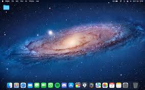
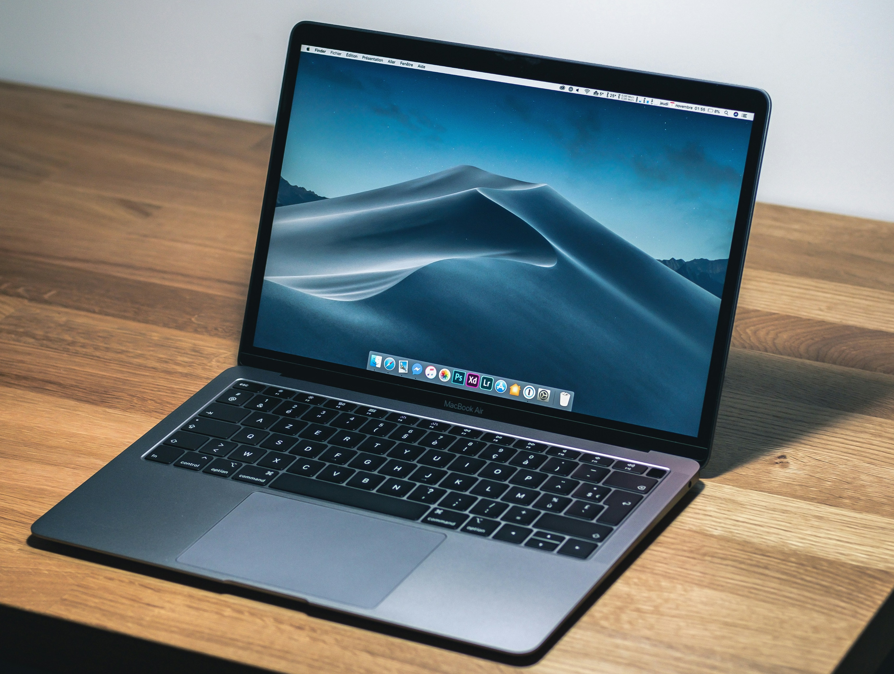

An operating system (OS) is system software that manages computer hardware and software resources, and provides common services for computer programs. Time-sharing operating systems schedule tasks for efficient use of the system and may also include accounting software for cost allocation of processor time, mass storage, peripherals, and other resources.

Windows is one of the most successful and latest operating systems.
To download Windows:
1. Click the download button.
2. Open the downloaded file to start installing Windows.

Mac OS is also one of the most successful operating systems.
It's quite difficult to install Mac OS on any PC (except Apple products).
Step 1: Download Mac OS Image
Step 2: Follow Installation Instructions

Linux is one of the most successful open-source operating systems.
Step 1: Download Linux
Step 2: Download Rufus Bootable USB tool
Step 3: Insert your USB drive into your PC.
Step 4: Load the Linux ISO into the USB using Rufus.
Step 5: Boot into BIOS and set USB as the boot device.
Step 6: Install Linux.